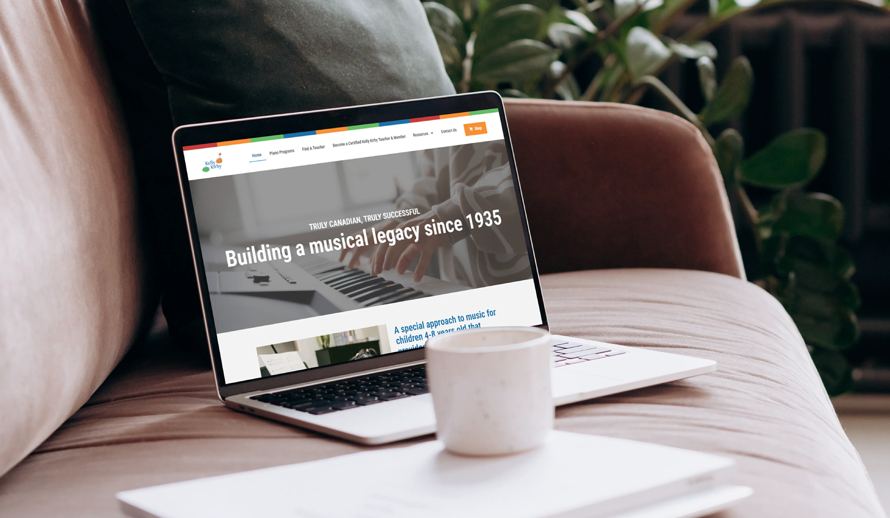
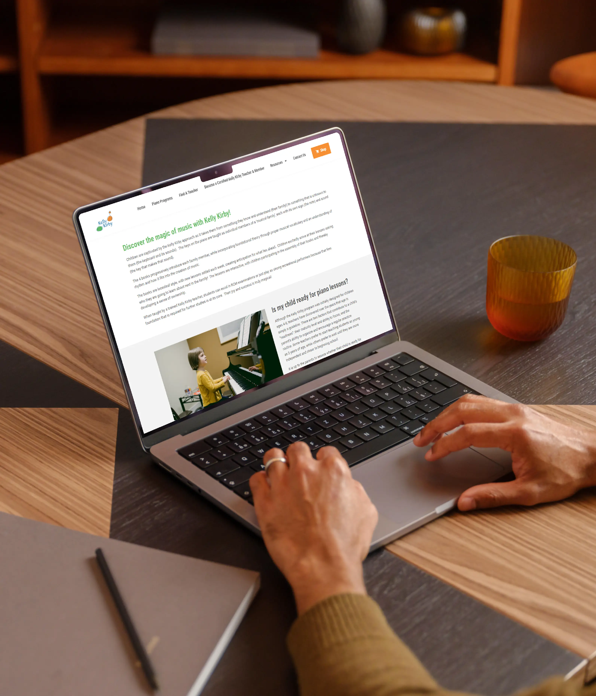
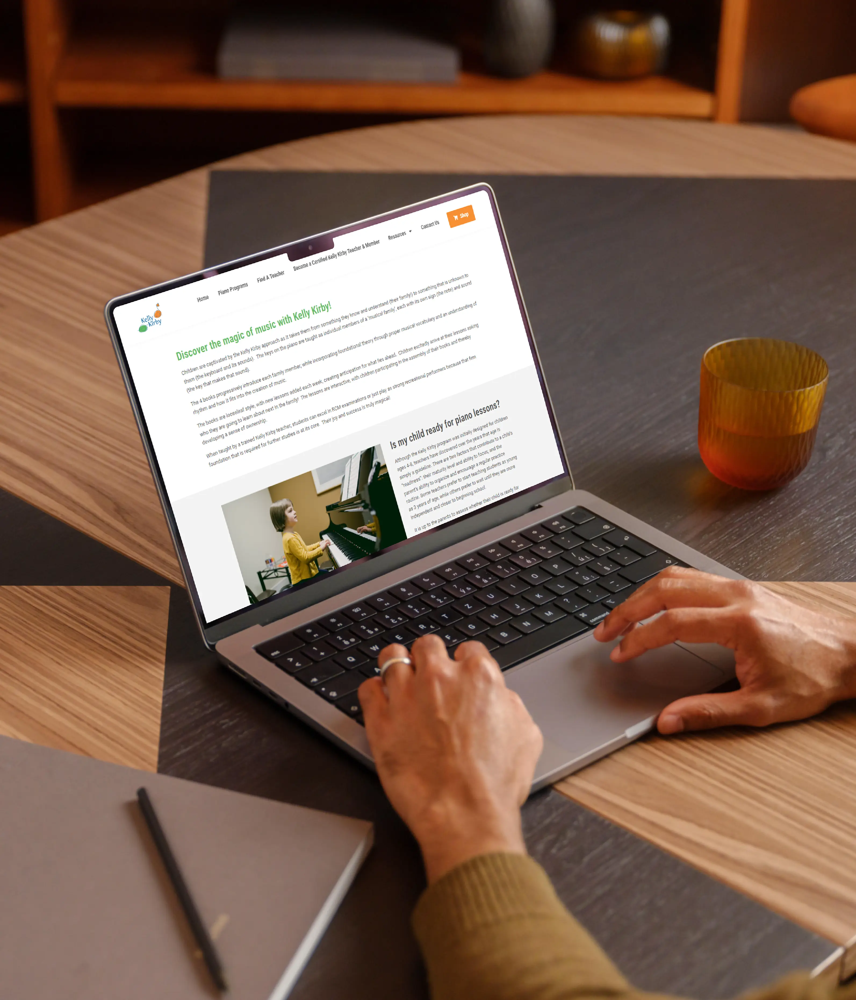

Kelly Kirby.com

The Kelly Kirby Piano Program is a renowned piano teaching method that began in 1935 at the Royal Conservatory of Music in Toronto, Canada. RW Digital was approached by the institution to design a new website that would serve as the foundation for information regarding the program, in addition to an integrated eCommerce platform for purchasing program materials and memberships.
With a legacy spanning over 80 years, we wanted to create a simple website that would promote the credibility of Kelly Kirby, while simultaneously appearing welcoming and friendly for users. The refresh aims to strengthen their reach and grow the parent-teacher-student community around the successful approach to music education. Kelly Kirby requested that we utilize the existing quad set of colours (red, orange, green and blue); we then went on to refine their website branding by ensuring consistent application of typography, layout and content format.
A key factor surrounding the website's new design was ease of use for parents/guardians. It was important to create a navigational system that would not only help parents learn more about the Kelly Kirby program, but to also be able to access resources and materials. Kelly Kirby encourages parents to be involved in their child's musical journey regardless of previous musical experience, so the website had to reflect this requirement.
Kelly Kirby.com utilizes the Amilia storefront integration for eCommerce transactions made on the site.

 

(Crafted with love & patience)